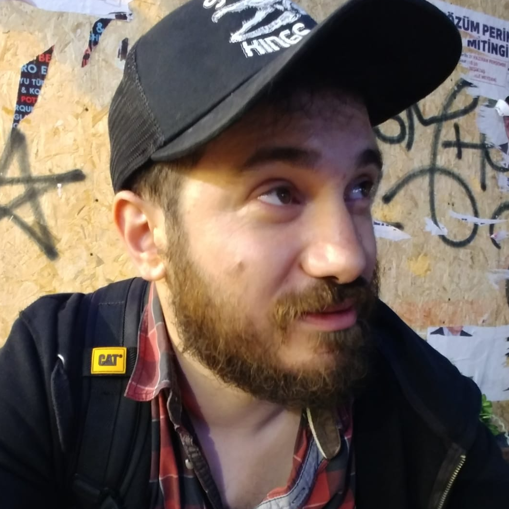

About me
Who is Güven?
I’m an engineer and visual artist who moves comfortably between analytical problems, software, project management and visual storytelling.
I design with precision and create with instinct. My work is deliberately multidisciplinary: engineering gives me structure, software gives me leverage, project management gives me direction, and art gives me another way to think.
Outside work, I draw, explore digital art, play drums and take food far more seriously than is strictly necessary.

Curiosity
Always learning, testing and connecting ideas across disciplines.
Precision
Engineering thinking applied to systems, projects and creative work.
Creation
Digital art, concept design and visual experimentation as a serious practice.